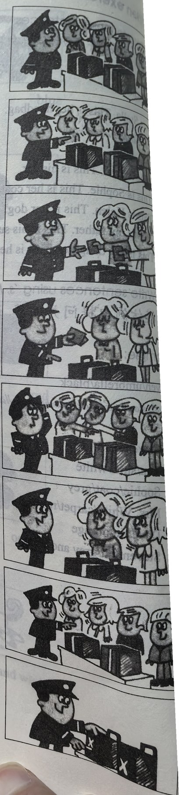
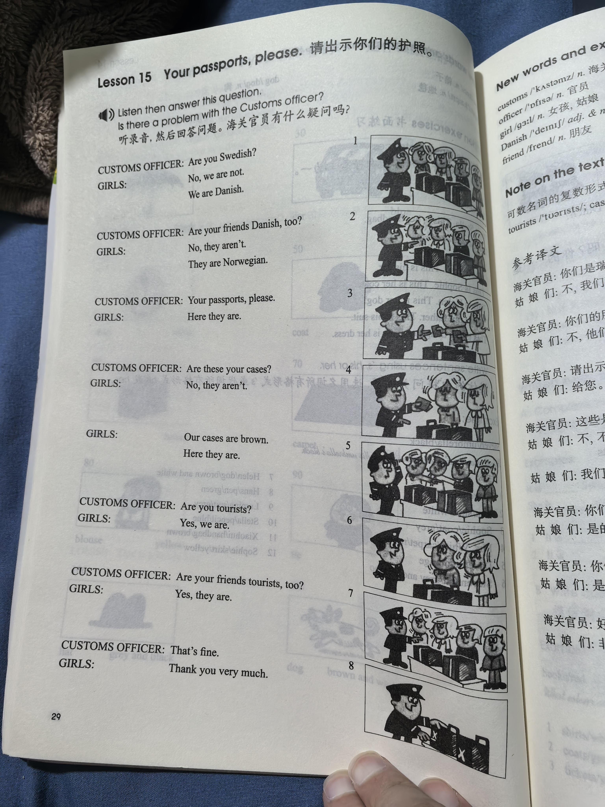
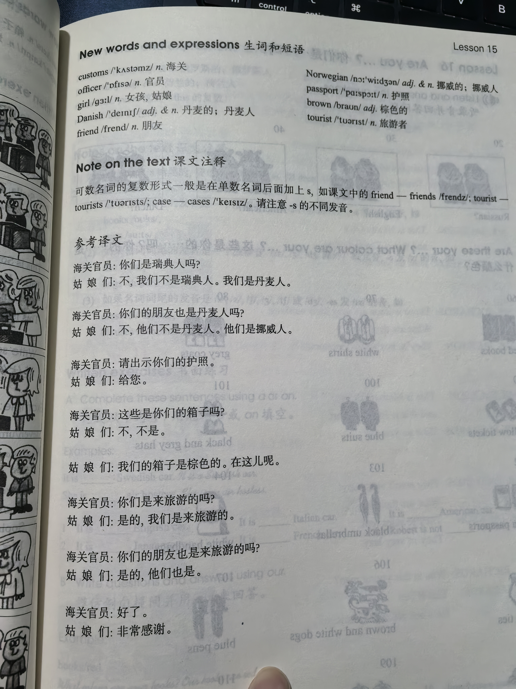

Lesson content · 课文
Lesson 15: Your passports, please. · 请出示你们的护照。
Listen then answer this question. 听录音，然后回答问题。
Is there a problem with the Customs officer?
海关官员有什么疑问吗？
CUSTOMS OFFICER: Are you Swedish?
GIRLS: No, we are not. We are Danish.
CUSTOMS OFFICER: Are your friends Danish, too?
GIRLS: No, they aren’t. They are Norwegian.
CUSTOMS OFFICER: Your passports, please.
GIRLS: Here they are.
CUSTOMS OFFICER: Are these your cases?
GIRLS: No, they aren’t.
GIRLS: Our cases are brown. Here they are.
CUSTOMS OFFICER: Are you tourists?
GIRLS: Yes, we are.
CUSTOMS OFFICER: Are your friends tourists, too?
GIRLS: Yes, they are.
CUSTOMS OFFICER: That’s fine.
GIRLS: Thank you very much.

New words and expressions · 生词和短语
| Word · 单词 | Pronunciation · 音标 | Meaning · 词义 |
|---|---|---|
| customs | /ˈkʌstəmz/ | n. 海关 |
| officer | /ˈɒfɪsə/ | n. 官员 |
| girl | /ɡɜːl/ | n. 女孩，姑娘 |
| Danish | /ˈdeɪnɪʃ/ | adj. & n. 丹麦的；丹麦人 |
| friend | /frend/ | n. 朋友 |
| Norwegian | /nɔːˈwiːdʒən/ | adj. & n. 挪威的；挪威人 |
| passport | /ˈpɑːspɔːt/ | n. 护照 |
| brown | /braʊn/ | adj. 棕色的 |
| tourist | /ˈtʊərɪst/ | n. 旅游者 |
Notes on the text · 课文注释
- 可数名词的复数形式一般是在单数名词后面加上 s，如课文中的 friend — friends /frendz/；tourist — tourists /ˈtʊərɪsts/；case — cases /ˈkeɪsɪz/。请注意 -s 的不同发音。
Chinese translation · 参考译文
海关官员：你们是瑞典人吗？
姑娘们：不，我们不是瑞典人。我们是丹麦人。
海关官员：你们的朋友也是丹麦人吗？
姑娘们：不，他们不是丹麦人。他们是挪威人。
海关官员：请出示你们的护照。
姑娘们：给您。
海关官员：这些是你们的箱子吗？
姑娘们：不，不是。
姑娘们：我们的箱子是棕色的。在这儿呢。
海关官员：你们是来旅游的吗？
姑娘们：是的，我们是来旅游的。
海关官员：你们的朋友也是来旅游的吗？
姑娘们：是的，他们也是。
海关官员：好了。
姑娘们：非常感谢。
Practice · 课文练习
Understand the lesson · 课文理解
Comprehension · 理解题
Answer the question about the lesson text. 根据课文回答问题。
-
comprehension: Comprehension · 理解题 — Is there a problem with the Customs officer?
Practice worksheet · 配套练习
A. Dialogue
Read this dialogue. Fill in the missing words. 填空。
-
worksheet: A. Dialogue — Customs officer: Welcome to England. ____ you Japanese?
Boys: No, ____ are not.
Customs officer: ____ you Korean?
Boys: No, ____ are not. We ____ Chinese.
Customs officer: ____ your friends Chinese, ____?
Boys: Yes, ____ are.
Customs officer: And ____ you tourists?
Boys: Yes, ____ are.
Customs officer: Your passports, ____.
Boys: Here ____ are.
Customs officer: Thank ____.
B. Vocabulary
Complete the nationality adjectives. 填上表示国籍的形容词。
-
worksheet: B. Vocabulary — My friends aren’t D____ or S____. They are N____.
-
worksheet: B. Vocabulary — The students are R____ and D____.
-
worksheet: B. Vocabulary — The tourists are E____, A____ and G____.
-
worksheet: B. Vocabulary — The girls are J____ and the boys are C____.
-
worksheet: B. Vocabulary — The man is F____ and his wife is I____.
C. Numbers
Write these numbers in figures. 用阿拉伯数字表示以下数词。
-
worksheet: C. Numbers — fifty-two
-
worksheet: C. Numbers — ninety-nine
-
worksheet: C. Numbers — a hundred and five
-
worksheet: C. Numbers — seventy-five
-
worksheet: C. Numbers — a hundred and one
-
worksheet: C. Numbers — a hundred and ten
Original images · 原图对照
Expand a page to compare it with the transcription. Open the original in a new tab to zoom in.
展开原图核对文字，也可以在新标签页打开原图放大查看。
Lesson text and oral practice · 课文与口头练习
Open original · 打开原图 ↗ Download original · 下载原图


Vocabulary, notes and written exercises · 生词、注释与书面练习
Open original · 打开原图 ↗ Download original · 下载原图



Grammar practice · 语法练习
I. Write the plural form of each word
a girl- two ___a friend- two ___a case- two ___a passport- two ___an engineer- two ___a ticket- two ___a student- two ___a tourist- two ___a pencil- two ___a tie- two ___
II. Answer the questions according to the statements given and the examples
- The books are new.
Are the books new?Yes, they are.
- The pencils are short.
Are the pencils long?No, they aren't. They are short.
- Our doors are white.
Are your doors red? - The tourists are Swedish.
Are the tourists German? - These cars are dirty.
Are these cars clean? - These engineers are busy.
Are these engineers busy? - Our friends are Danish.
Are your friends Norwegian? - The carpets are red.
Are the carpets brown? - The mechanics are dirty.
Are the mechanics dirty? - Our passports are green.
Are your passports yellow?
III. Fill in the blanks with am, is, or are
- ___ your girl friend fat or thin?
- We ___ all very well, thank you.
- Our house ___ big and clean.
- Look! Here ___ my dress. It ___ very smart.
- ___ you Dutch tourists?
- We ___ not German. We ___ Norwegian.
- ___ you an engineer or a taxi driver?
- These ___ my books. Whose ___ these pens and pencils?
- My friend ___ a teacher. His two brothers ___ teachers, too.
- ___ these your pens? What make ___ they?
- Here ___ our passports.
- How ___ your parents? They ___ very well, thank you.
Your notes and answers
Use this space for longer responses or exercises that do not have an individual answer box.